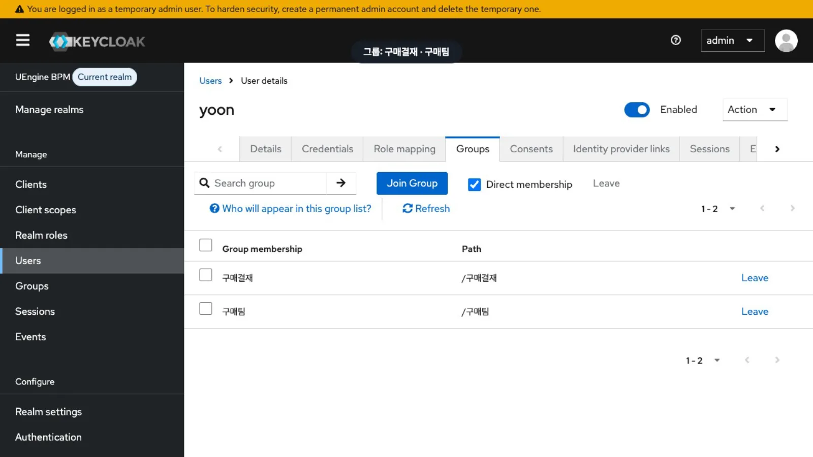
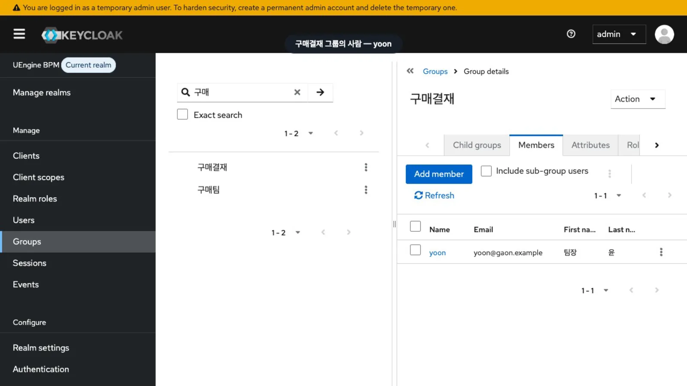
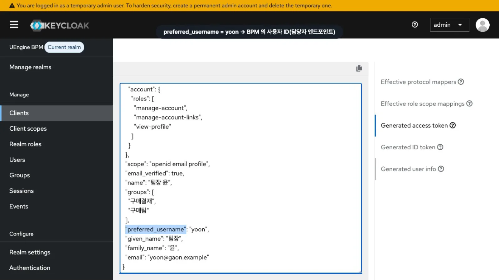
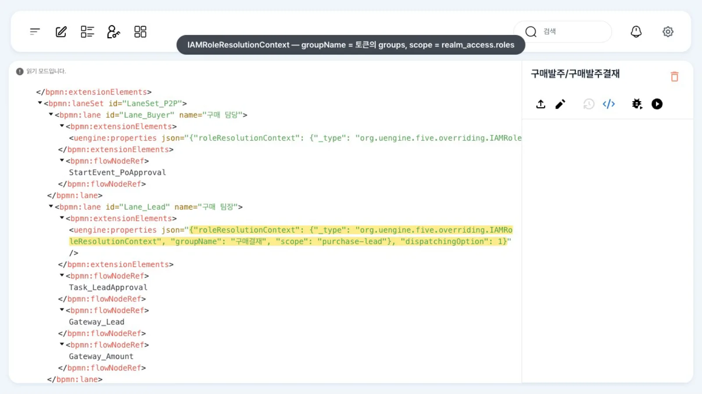

Keycloak 관리 콘솔에서 가온가전의 사람·그룹·역할을 확인하고, 그 값이 토큰을 거쳐 BPM의 작업 담당자와 레인 규칙으로 이어지는 과정을 따라갑니다. 콘솔에서는 아무것도 바꾸지 않습니다.
무엇을 · 왜#
uEngine6은 사용자 정보를 따로 저장하지 않습니다. 로그인과 사람·그룹·역할은 Keycloak의 realm uengine이 맡습니다. 브라우저는 게이트웨이(:8288)에서 Keycloak으로 로그인하고, 화면과 API는 Keycloak이 발급한 액세스 토큰으로 엔진을 호출합니다.
엔진(process-service)은 토큰에서 세 가지를 읽습니다(org.uengine.five.spring.SecurityAwareServletFilter).
| Keycloak에서 | 토큰 클레임 | 엔진에서 쓰는 곳 |
|---|---|---|
| 사용자 이름(Username) | preferred_username |
사용자 ID. 작업 담당자(endpoint), 레인의 DirectRoleResolutionContext.endpoint, 시작 API의 roleMappings[].endpoints가 모두 이 값입니다 |
| 그룹(Groups) | groups |
그룹 레인(IAMRoleResolutionContext.groupName)과 업무 목록의 경합 작업 |
| realm 역할(Realm roles) | realm_access.roles |
역할 레인(IAMRoleResolutionContext.scope). 담당자 칸에 역할 이름이 들어 있는 작업도 그 역할을 가진 사람에게 보입니다 |
preferred_username이 비어 있을 때만 email, 그다음 sub를 씁니다. 그래서 레인에 이메일을 적으면(yoon@gaon.example) 그 작업은 누구의 업무 목록에도 표시되지 않습니다(레인과 담당자).
이 튜토리얼의 가상 회사 가온가전은 다음과 같이 등록되어 있습니다(로컬 시연용 비밀번호 gaon-1234, 관리자 hong은 1234).
| 사람 | Username | 그룹 | realm 역할 |
|---|---|---|---|
| 최구매 | choi |
구매팀 | purchase |
| 윤팀장 | yoon |
구매팀, 구매결재 | purchase-lead |
| 김대표 | kim |
경영진 | ceo |
| 이재고 | lee |
물류팀 | warehouse |
| 정회계 | jung |
회계팀 | accounting |
| 홍길동(관리자) | hong |
— | — |
왜 「구매결재」 그룹이 따로 있나. 경합(선점) 레인의 작업은 담당자 없이 생성되고, 업무 목록 조회(WorklistRepository.findToDo)가 「작업의 그룹이 내 토큰의 groups 에 있는가」로 작업을 표시할 사용자를 정합니다. 이 브랜치의 조회 조건에는 역할을 보지 않고 그룹만 맞추는 조건이 함께 있어서, 같은 그룹이면 역할이 달라도 작업이 보입니다. 그래서 가온가전은 결재 권한자만 속한 그룹 「구매결재」를 따로 둡니다.
따라 하기#
- 관리 콘솔 열기.
http://localhost:8280/admin/master/console/에 Keycloak 관리자로 로그인합니다(로컬 스택은admin/admin). 처음에는masterrealm이 열립니다. 왼쪽 「Manage realms」에서uengine을 누르면 왼쪽 위가 「UEngine BPM」으로 바뀝니다. 위쪽의 노란 「temporary admin user」 띠는 임시 관리자 계정이라는 경고입니다(아래 「운영에서 바꿀 것」). - 사용자. 「Users」에서
yoon을 검색해 엽니다. 「Groups」 탭에구매결재·구매팀, 「Role mapping」 탭에purchase-lead가 있습니다. 여기 보이는 Usernameyoon이 BPM에서 윤팀장의 ID입니다.
yoon의 그룹 - 그룹. 「Groups」에서
구매로 검색하면구매결재와구매팀이 나옵니다.구매결재를 열고 「Members」 탭을 보면 구성원은yoon한 사람입니다.
구매결재 그룹의 구성원 - realm 역할. 「Realm roles」에서
purchase로 검색해purchase-lead를 열고 「Users in role」 탭을 봅니다. 이 역할을 가진 사람도yoon입니다. - 토큰 미리 보기. 「Clients」 →
uengine→ 「Client scopes」 → 「Evaluate」에서 「Users」 칸에yoon을 고르고 오른쪽 「Generated access token」을 누릅니다. 윤팀장이 로그인하면 받을 토큰이 그대로 보입니다.realm_access.roles에purchase-lead,groups에구매결재·구매팀,preferred_username에yoon이 있습니다. 이 화면은 토큰을 생성해 보여 주기만 하고 설정을 바꾸지 않습니다.
윤팀장의 액세스 토큰 - BPM 레인에서 확인. 홍길동으로 BPM에 들어가
구매발주/구매발주결재(ERP 예제의 정의)를 열고 「XML 보기」(</>)를 누릅니다. 「구매 팀장」 레인의 JSON에 그룹구매결재, 역할purchase-lead,dispatchingOption: 1(선점)이 있습니다. 이 레인의 작업은 구매결재 그룹 구성원의 업무 목록에 표시되고, 한 사람이 선점하면 그 사람의 작업이 됩니다.
구매 팀장 레인의 JSON
설정 레퍼런스#
레인 JSON과 Keycloak 값#
| 레인 규칙 | 레인 JSON(roleResolutionContext) |
Keycloak에서 맞출 값 |
|---|---|---|
| 사람 한 명 | {"_type":"org.uengine.kernel.DirectRoleResolutionContext","endpoint":"yoon","resourceName":"윤팀장"} |
Username |
| 그룹 + 역할 + 선점 | {"_type":"org.uengine.five.overriding.IAMRoleResolutionContext","groupName":"구매결재","scope":"purchase-lead"}과 레인의 "dispatchingOption": 1 |
그룹 이름(경로 아님), realm 역할 이름 |
| 시작한 사람 | 첫 레인은 비워 둠 | — (화면 「실행」·API 시작자가 들어감) |
레인 패널의 「기관」「권한」 목록은 Keycloak이 아니라 고정값이므로, 가온가전 그룹·역할은 XML로 적습니다(레인과 담당자).
토큰에서 사용자 ID를 고르는 코드#
// process-service: org.uengine.five.spring.SecurityAwareServletFilter (발췌)
DecodedJWT decodedJWT = JWT.decode(accessToken);
List<String> groups = decodedJWT.getClaim("groups").asList(String.class);
String userId = decodedJWT.getClaim("preferred_username").asString(); // 없으면 email, 그다음 sub
... realm_access.roles → UserContext scopes, groups → UserContext groups
클라이언트 uengine#
| 항목 | 로컬 스택 값 | 뜻 |
|---|---|---|
| Client type | public(시크릿 없음) | 브라우저 화면이 직접 로그인 |
| Direct access grants | 켜짐 | 비밀번호로 토큰 받기(grant_type=password). 이 튜토리얼의 API 예제·스크립트에서 사용합니다 |
매퍼 groups |
Group Membership, full.path = false, access token에 포함 |
토큰의 groups에 /구매결재가 아니라 구매결재가 들어가도록 합니다 |
토큰의 allowed-origins |
http://localhost:8088, :8288, :5373 |
클라이언트의 Web origins |
토큰 내용은 터미널에서 다음과 같이 확인합니다:
curl -s -X POST http://localhost:8280/realms/uengine/protocol/openid-connect/token \
-d client_id=uengine -d username=yoon -d password=gaon-1234 -d grant_type=password -d scope=openid \
| python3 -c 'import sys,json,base64; t=json.load(sys.stdin)["access_token"].split(".")[1]; t+="="*(-len(t)%4);
d=json.loads(base64.urlsafe_b64decode(t)); print(d["preferred_username"], d["groups"], d["realm_access"]["roles"])'
# yoon ['구매결재', '구매팀'] ['offline_access', 'default-roles-uengine', 'uma_authorization', 'purchase-lead', 'user']
운영에서 바꿀 것#
로컬 스택의 값을 그대로 쓰지 마세요
이 튜토리얼의 비밀번호와 클라이언트 설정은 한 PC에서 시연하기 위해 정한 값입니다.
- 관리자 계정. 노란 띠에 표시된 대로
admin/admin은 임시 관리자입니다. 영구 관리자 계정을 만들고 임시 계정을 삭제하세요. process-service도 Keycloak 관리 API로 그룹·역할을 조회하므로(KEYCLOAK_ADMIN_USERNAME·KEYCLOAK_ADMIN_PASSWORD,KeycloakIAMService) 이 값을 전용 계정의 정보로 바꿉니다. 권한을 줄인 계정으로 실행해 보지는 않았습니다. - 사람 비밀번호.
gaon-1234·1234는 시연용입니다. 실제 사용자는 사내 디렉터리(LDAP·AD)를 Keycloak 「User federation」으로 붙이는 편이 일반적입니다(이 튜토리얼에서는 확인하지 않았습니다). - 클라이언트. 「Direct access grants」(비밀번호로 토큰 받기)는 화면 로그인에는 필요 없습니다. 스크립트·연동은 서비스 계정(client credentials)으로 바꾸고 끄는 것을 검토하세요. 「Valid redirect URIs」·「Web origins」는 실제 도메인만 남깁니다.
- 엔진 포트를 열지 않기. 게이트웨이는 토큰 서명을 검사하지만(
oauth2ResourceServer().jwt()), process-service는 토큰을JWT.decode로 읽기만 합니다(서명 검사 없음). process-service(9294)·definition-service(9293)는 게이트웨이 뒤에만 두세요.
확인 문제#
레인에 사람을 직접 지정하면서 `yoon@gaon.example`을 적었더니 윤팀장의 업무 목록에 작업이 안 보입니다. 왜인가요?
엔진의 사용자 ID는 토큰의 preferred_username(yoon)입니다. 작업 담당자가 yoon@gaon.example이면 어느 사용자 ID와도 일치하지 않습니다. 따라서 누구의 업무 목록에도 표시되지 않습니다. 레인 JSON의 endpoint를 yoon으로 고칩니다.
구매팀 전원(최구매·윤팀장)이 들어 있는 그룹 「구매팀」에 역할 `purchase-lead`를 붙여 결재 레인을 만들면 최구매에게도 결재가 보이나요?
이 브랜치에서는 보일 수 있습니다. 경합 작업의 업무 목록 조회에 그룹만 맞추는 조건이 함께 있기 때문입니다. 결재 권한자만 속한 그룹(가온가전의 「구매결재」)을 따로 두세요.
새 결재자를 추가하려면 BPM 정의를 다시 배포해야 하나요?
아닙니다. Keycloak에서 그 사람을 「구매결재」 그룹에 넣고 purchase-lead 역할을 주면, 다시 로그인한 뒤 받는 토큰에 그룹·역할이 들어가 그 사람의 업무 목록에 결재 작업이 보입니다.